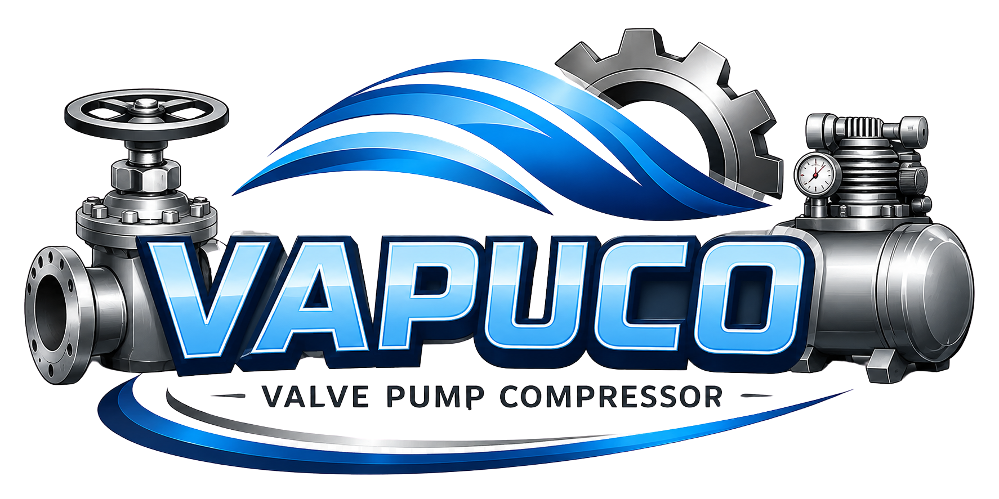

Industrial Valves
Gate valves, globe valves, ball valves, check valves, butterfly valves, strainers and special industrial valves.

Industrial solutions
High quality industrial valves, pumps and compressors for demanding applications.
Product range
Gate valves, globe valves, ball valves, check valves, butterfly valves, strainers and special industrial valves.
Reliable pumping solutions for industrial processes, water systems and demanding applications.
Industrial compressor solutions for continuous operation and reliable performance.
About VAPUCO
VAPUCO supplies industrial valves, pumps and compressors with a focus on quality, technical support and fast communication. We help customers choose suitable equipment according to medium, pressure, temperature and project requirements.
Trusted manufacturers
Baltic Valves · Bonney Forge · Valvosider
Email: sales@vapuco.eu
Phone: +421 911 854 278
Address: Narcisová 1945/2, 927 05 Šaľa, Slovakia